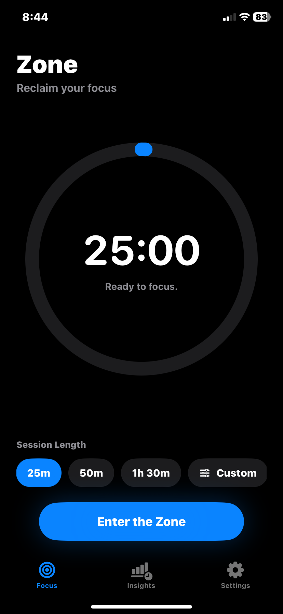
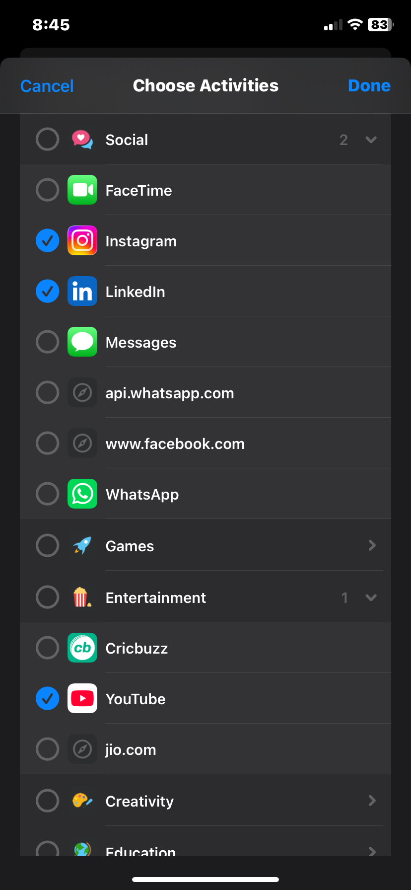
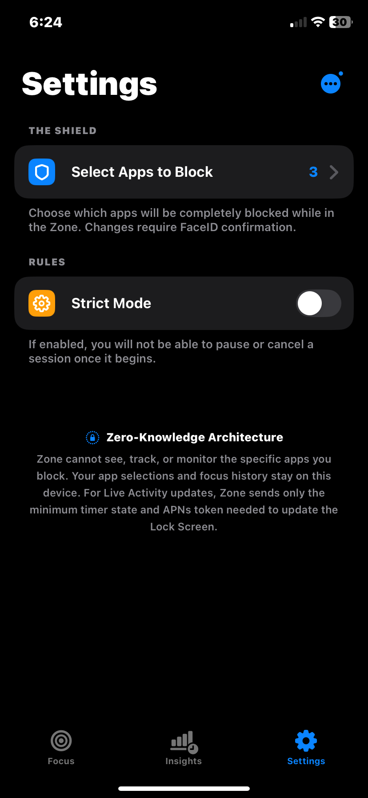
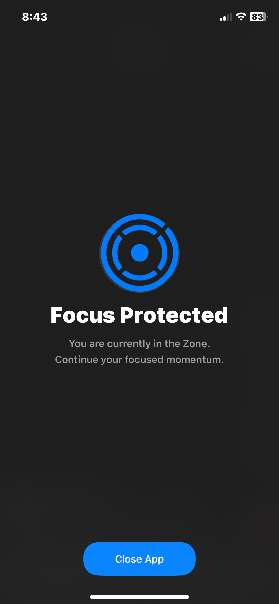
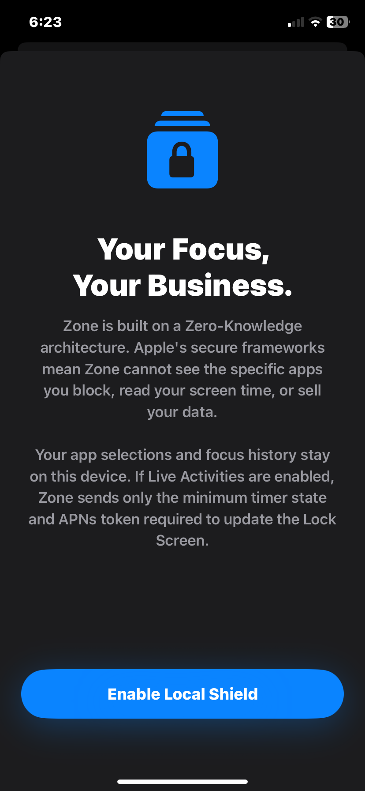
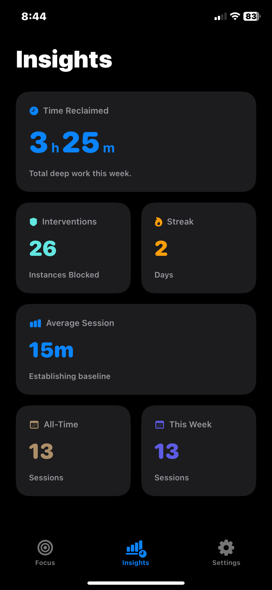

Silence the
Noise.
The uncompromising focus timer for professionals. Physically block your most distracting apps and leverage native iOS architecture to keep you in a flow state.

Choose Your Battles.
Target the exact apps and websites that pull you out of your workflow. Zone uses Apple's native Screen Time frameworks to securely hide your biggest digital vices the moment a session begins.

Strictly Enforced.
Standard timers just ring. Zone physically prevents you from opening distractions. Once Strict Mode is engaged, there is no pausing, no canceling, and no way out until your deep work session is complete.

Focus Protected.
When you are in the Zone, your iPhone transforms into a dedicated productivity tool. We guard your attention so you can lock in, do the work, and build unstoppable momentum.

Your Focus,
Your Business.
Zone operates entirely on-device with a Zero-Knowledge architecture. We cannot see, track, or monitor the specific apps you block. What happens on your device, stays on your device.
Read our strict Privacy Policy →
Reclaim Your Time.
Track your focus streaks, monitor how much deep work you've accomplished, and see exactly how many times Zone successfully intervened to block a distraction.
